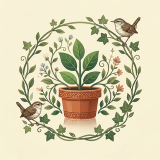

Idle Plant Incremental
En test — pas encore publiéUn jeu mobile idle/incremental sur le thème des plantes, de leur cycle de vie et de la faune qui les accompagne. Plante une graine, laisse-la pousser, récolte, composte, débloque de nouvelles espèces et améliore ton jardin — qui continue de vivre même quand tu n'es pas là.
À propos du jeu
Android uniquement, disponible en français et en anglais. Le jeu combine une boucle de récolte/compostage, un jardin sauvage, plusieurs couches de prestige (Symbiose, Faune, Écosystème), et de la publicité optionnelle vidéo récompensée pour des bonus temporaires.
- Éditeur : RIIG (Ralden Idle Incremental Games)
- Plateforme : Android
- Identifiant d'application :
com.riiggames.idleplantincremental - Prix : Gratuit, avec publicités optionnelles et achats intégrés facultatifs
Idle Plant Incremental
In testing — not yet publishedA mobile idle/incremental game about plants, their life cycle, and the wildlife that comes with them. Plant a seed, let it grow, harvest it, compost the leftovers, unlock new species, and grow a garden that keeps living even when you're not there.
About the game
Android only, available in French and English. The game combines a harvest/composting loop, a wild garden, several layers of prestige (Symbiosis, Wildlife, Ecosystem), and optional rewarded video ads for temporary bonuses.
- Publisher: RIIG (Ralden Idle Incremental Games)
- Platform: Android
- App ID:
com.riiggames.idleplantincremental - Price: Free, with optional ads and optional in-app purchases